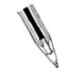

\1\2ğaç\3
Tükenmez kalemi kim icat etti?

a. Bay Biro
b. Bay Bich
c. Bay Quiet
d. Bay Loud
Tükenmez kalem çıkmadan önce yazı yazmak çok meşakkatli bir işti. Dolmakalemler düzenli olarak mürekkep kabına batırılırdı ve sızıntı yapmaya meyilliydiler. Ayrıca Hint mürekkebi (Çin’de icat edilmiştir) sayfada yavaş kururdu.
Bu sorunlar ilk kez 30 Ekim 1888’de tabakhaneci John J. Loud’un yaptığı patent başvurusuyla onaylandı. Loud, ucunda döner küçük bir top olan ve haznesinden bu uca sürekli mürekkep gelen bir tükenmez kalem yaratmıştı. Bu tükenmez kalem sızıntı yapsa bile, derinin üstüne yazmakta dolmakalemden çok daha etkiliydi. Loud, patentini alamadı. Eğer almış olsaydı İngilizler tükenmez kaleme “biros” yerine “louds” diyor olacaklardı.
Macar László Biró (1899-1985) asıl olarak doktorluk eğitimi aldı, fakat hiçbir zaman mezun olamadı. Gazetecilikle iştigal etmeden önce hipnotize etme ve otomobil yarışı gibi kısa süreli uğraşları oldu.
Gazete mürekkebiyle dolmakalem mürekkebinin kuruma sürelerindeki farklılığın yarattığı şaşkınlıkla Biró ve kimyager kardeşi György, tükenmez kaleme, döndükçe mürekkebi aşağıya akıtan küçük bir bilyeyi başarıyla yerleştirdiler. İşte İngilizlerin “biro” dediği tükenmez kalem böyle doğdu.
İki kardeş 1938’de Macaristan’da tükenmez kalemin patentini aldıktan sonra, Nazilerden kaçmak için Arjantin’e göç edip 1943’te orada yeniden patent aldılar. Bunu yapmaları, İngilizcede “biro” isminin tükenmez kalemle aynı anlama gelmesini sağladı.
Satışa çıkarılan ilk birolar 1945’te üretildi. Biró aynı yıl tükenmez kalem lisansını bir Fransız olan Marcel Bich’e verdi.
Bich kendi firmasına BiC adını verip Biró’nun tasarımını çok az değiştirerek bir seri üretim sistemi kurdu, bu da tükenmez kalemleri inanılmaz ucuza mal etmesini sağladı.
BiC hâlâ tükenmez kalem konusunda yıllık 1.38 milyar euroyla dünya lideridir. 2005’te 100 milyarıncı tükenmez kalemini satmıştır. En çok satan BiC Cristal modeli günde 14 milyon adet satılmaktadır.
Biró’ya saygı göstergesi olarak (tükenmez kaleme birome adını veren) Arjantinliler, Biró’nun doğum günü olan 29 Eylül’ü Mucitler Günü olarak kutlar.